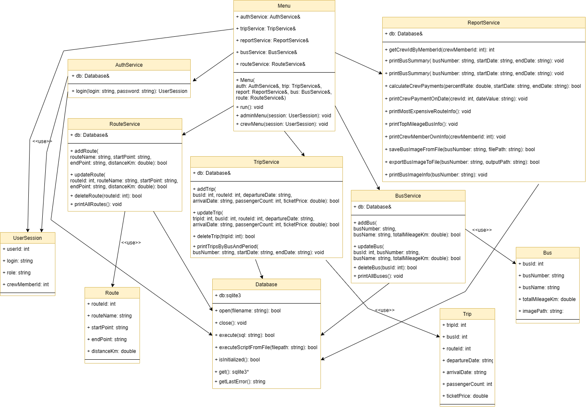
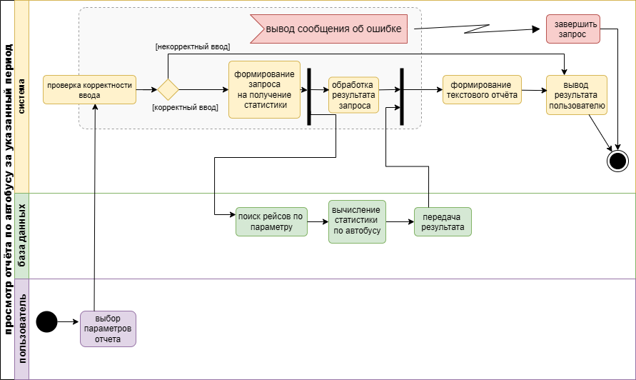
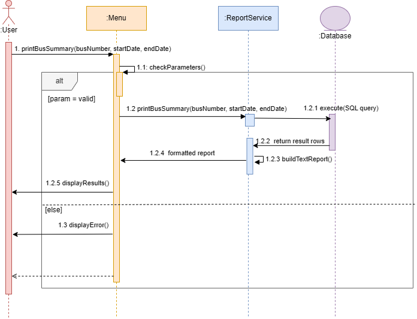
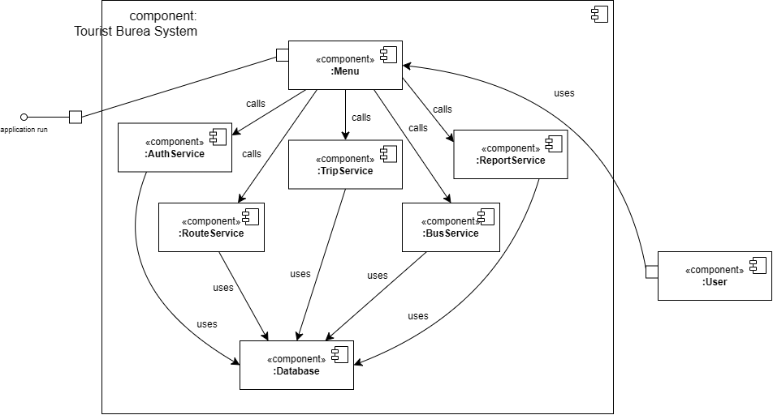
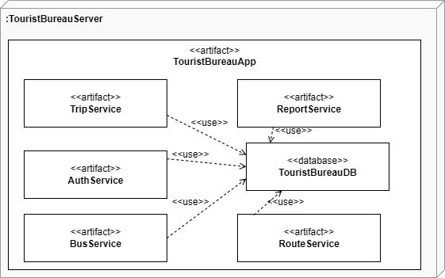

Система «Туристическое бюро» предназначена для автоматизации управления
экскурсионными маршрутами, автобусами, экипажами и рейсами.
Приложение обеспечивает хранение данных, выполнение операций над ними
и формирование отчётов.
Диаграмма классов
Диаграмма классов отражает архитектуру системы и взаимодействие между
пользовательским интерфейсом, сервисным слоем, базой данных и структурами данных.

Основные классы
Управляющий уровень
- Menu — отвечает за взаимодействие с пользователем, обработку ввода и вызов сервисов в зависимости от роли пользователя.
Сервисный уровень
- AuthService — выполняет аутентификацию пользователей и формирует сессию пользователя.
- TripService — управляет рейсами.
- BusService — управляет автобусами.
- RouteService — управляет маршрутами.
- ReportService — формирует отчёты и выполняет аналитические запросы.
Уровень доступа к данным
- Database — обеспечивает подключение к базе данных SQLite, выполнение SQL-запросов и управление транзакциями.
Структуры данных
- Trip — рейс.
- Route — маршрут.
- Bus — автобус.
- UserSession — информация о текущей сессии пользователя.
Связи между классами
- Menu использует сервисы: AuthService, TripService, BusService, RouteService, ReportService.
- Все сервисы используют Database для работы с базой данных.
- AuthService формирует объект UserSession, который затем используется в Menu.
- Сервисные классы логически работают со структурами данных предметной области.
Особенности архитектуры
- Система построена по принципу разделения слоёв: представление, сервисы, доступ к данным и модели.
- Доступ к базе данных осуществляется только через сервисы.
- Связи между сущностями реализованы на уровне базы данных и SQL-запросов.
Диаграмма деятельности

Диаграмма деятельности отражает процесс формирования и вывода отчёта по автобусам за указанный период.
Основные этапы
- Пользователь задаёт параметры отчёта.
- Система проверяет корректность введённых данных.
- При ошибке выводится сообщение, и процесс завершается.
- При корректных данных формируется запрос к базе данных.
- База данных возвращает данные, система вычисляет статистику и формирует текстовый отчёт.
- Результат выводится пользователю.
Диаграмма последовательности

Диаграмма последовательности показывает взаимодействие компонентов системы
при формировании и выводе отчёта по автобусам за указанный период.
Основной сценарий
- Пользователь инициирует запрос на формирование отчёта.
- Menu принимает запрос и проверяет корректность параметров.
- Menu вызывает метод
printBusSummary(...) сервиса ReportService.
- ReportService формирует SQL-запрос и обращается к Database.
- База данных возвращает результат запроса.
- ReportService обрабатывает данные и формирует текстовый отчёт.
- Результат возвращается в Menu и выводится пользователю.
Альтернативный сценарий
- При некорректных параметрах Menu не обращается к сервису.
- Пользователю выводится сообщение об ошибке.
Диаграмма компонентов

Диаграмма компонентов отражает архитектуру системы и взаимодействие между её основными частями.
Основные компоненты
- Menu — пользовательский интерфейс.
- AuthService — аутентификация пользователей.
- TripService — управление рейсами.
- RouteService — управление маршрутами.
- BusService — управление автобусами.
- ReportService — формирование отчётов.
- Database — доступ к базе данных и выполнение SQL-запросов.
- User — внешний актор.
Общая логика работы
- Пользователь взаимодействует с компонентом Menu.
- Menu вызывает соответствующий сервис.
- Сервис обрабатывает запрос и при необходимости обращается к Database.
- Результат возвращается пользователю через Menu.
Диаграмма развертывания

Диаграмма развертывания показывает физическое размещение компонентов системы
и их взаимодействие в процессе выполнения.
Основные элементы
- TouristBureauServer — сервер, на котором выполняется приложение.
- TouristBureauApp — основное приложение с бизнес-логикой системы.
- TouristBureauDB — база данных.
- В составе приложения выделены модули: AuthService, TripService, RouteService, BusService, ReportService.
Взаимодействие компонентов
- Все сервисы приложения взаимодействуют с базой данных через зависимость типа <<use>>.
- Сервисы не взаимодействуют напрямую друг с другом, что обеспечивает разделение ответственности.
Вывод
Разработанная спецификация описывает архитектуру системы, её структуру и поведение.
UML-диаграммы наглядно показывают взаимодействие компонентов и служат основой
для дальнейшей реализации проекта.